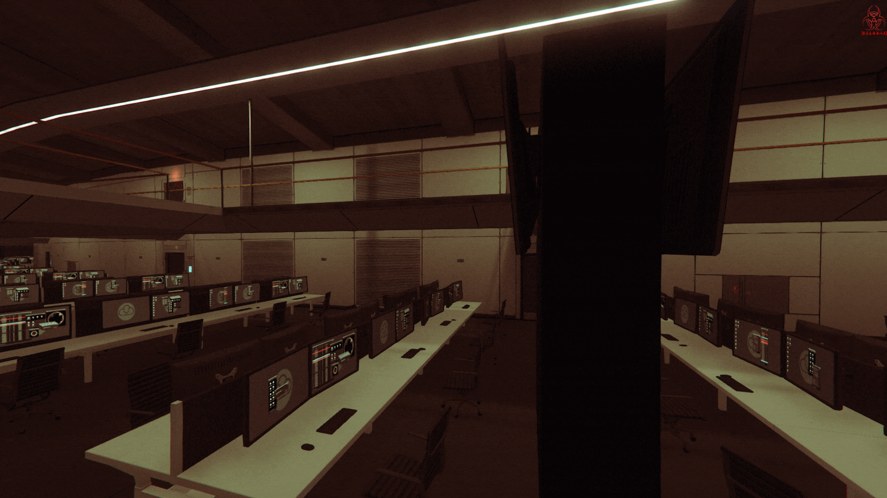
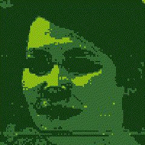
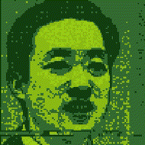
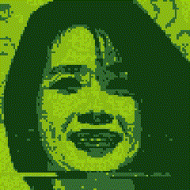
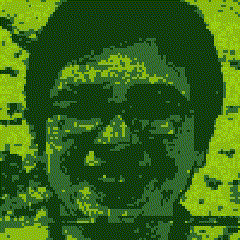
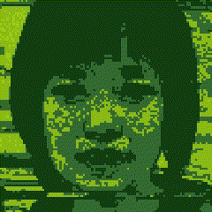
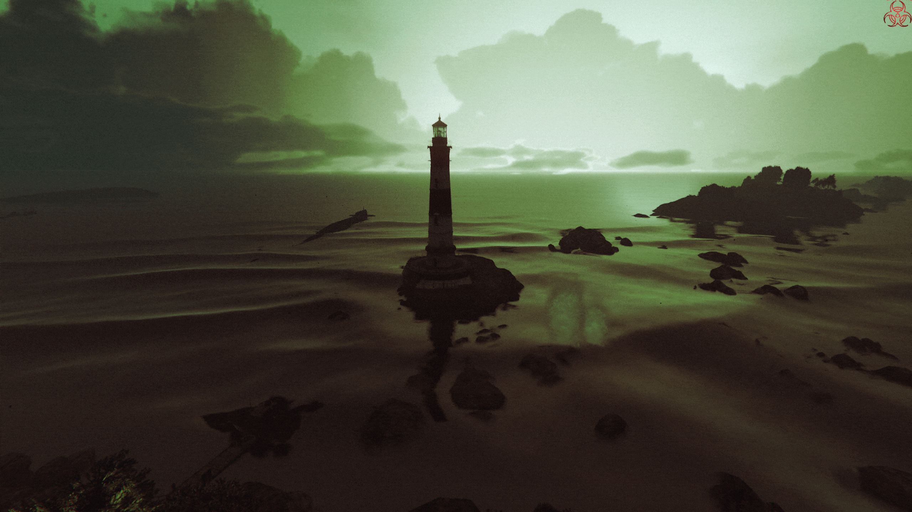

Laboratorios
[D-E-L-U-X-I-A]
[D-E-L-U-X-I-A]
Los Laboratorios de [D-E-L-U-X-I-A] son una instalación de investigación de clase mundial, especializada en el estudio de infecciones virales mutantes, la patología del Virus N-Z y sus efectos en la biología humana. Un equipo de científicos apasionados se dedica a desentrañar las complejidades de estas mutaciones y a desarrollar tratamientos y medidas preventivas efectivas para mitigar su impacto en lo que queda de la humanidad.
Nuestro enfoque de investigación es integral, integrando las últimas técnicas científicas en virología molecular, genética, modelado computacional y biología estructural. Esta diversidad de métodos nos permite detectar y comprender rápidamente nuevas mutaciones del Virus N-Z, investigando los mecanismos moleculares y celulares que impulsan su propagación y devastadores efectos en la población mundial.
Dr. Isaac Mercer
Líder del Proyecto y Jefe de Investigación

Dra. Ximena Ryder
Vicepresidenta de Ingeniería Biológica

Dr. Luis Antonio
Vicepresidente de Operaciones y Seguridad

Dra. Sophia Rivaz
Directora de Desarrollo del Protocolo [Neón]

Dr. Daniel Kline
Director de Investigación y Laboratorios

Dra. Arely X-1
Directora de Operaciones Globales

En [D-E-L-U-X-I-A], entendemos que la investigación sobre las infecciones virales y la patología del Virus N-Z va más allá del análisis molecular y genético. Nuestro equipo está comprometido en comprender las características fisiológicas y patológicas de estas infecciones mutantes, con el fin de desarrollar intervenciones terapéuticas innovadoras que aborden las causas subyacentes de estas enfermedades devastadoras.
Nos enorgullecemos de utilizar la vanguardia en análisis de datos e inteligencia artificial para observar y comprender con precisión las complejas patologías del Virus N-Z. A través de nuestra investigación, buscamos difundir conocimientos e ideas a la sociedad, apoyando la preparación de las comunidades para enfrentar posibles brotes futuros.
Organización [D-E-L-U-X-I-A]
Laboratorio secreto — Faro de El Gordo
Laboratorio secreto — Faro de El Gordo
Header
0 CIVILES MUERTOS 💀
0 ZOMBIS DETECTADOS ☢️